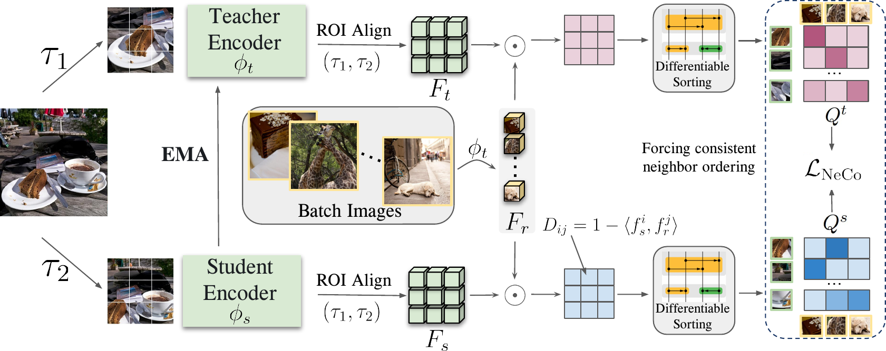
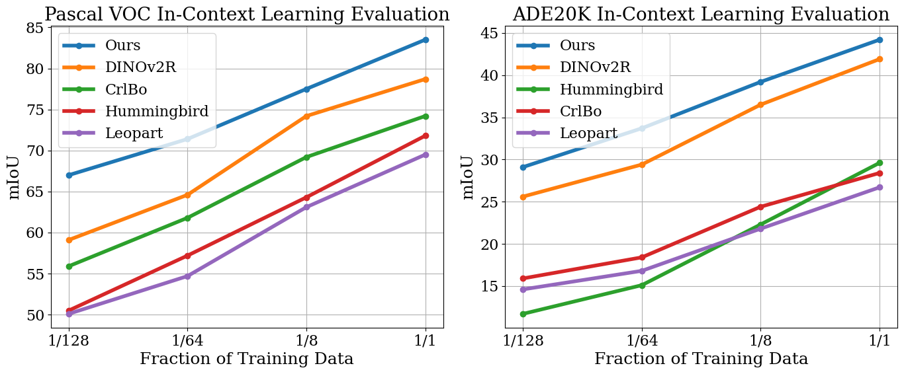

Near, far: Patch-ordering enhances vision foundation models’ scene understanding
NeCo: a dense self-supervised loss that enforces patch-level nearest-neighbor consistency by sorting features across a student and teacher
We introduce NeCo (Patch Neighbor Consistency), a self-supervised training loss that enforces patch-level nearest-neighbor consistency across a student and a teacher model. Rather than the binary “attract / repel” signal of contrastive learning, NeCo uses a finer signal: it sorts spatially dense features relative to a set of reference patches and forces the ordering of nearest neighbors to agree across two views. The method applies differentiable sorting on top of pretrained representations, such as DINOv2 with registers, to bootstrap and improve them. This dense post-pretraining runs in only 19 hours on a single GPU, yet yields high-quality dense feature encoders and sets new state-of-the-art results on non-parametric in-context semantic segmentation, linear segmentation, frozen clustering, and 3D multi-view consistency.
The problem: dense features, learned cheaply
Vision foundation models such as DINOv2 produce strong image-level representations, but using them for dense scene understanding — assigning a meaningful feature to every patch — is harder. The paper proposes a dense post-pretraining step: start from an existing self-supervised backbone and refine its spatial tokens so that patches of the same object or object part sit closer together in feature space, while keeping the cost modest.
The key idea is to define patch similarity not as a binary relation but as an ordering. Two patches from the same cat may show different parts (a tail versus a leg), so the method asks for a consistent ranking of nearest neighbors rather than a hard same/different label.1
1 Contrastive and clustering objectives only enforce “attract” or “repel”; the authors argue that a sorting-based signal preserves subtle distinctions among patches of the same object and avoids relying on explicit negatives.
Method: Patch Neighbor Consistency (NeCo)

Concretely, each input image I yields two views V_1, V_2. A Vision Transformer student \phi_s and teacher \phi_t (teacher weights are an exponential moving average of the student’s) encode them, and ROI-Align (He et al. 2017) spatially aligns the two feature maps F_s, F_t \in \mathbb{R}^{N' \times d}. A random fraction f \ll 1 of all batch patches is sampled as reference features F_r, and distances are computed by cosine similarity:
D_s(i, j) = 1 - \frac{\langle F_s^{i}, F_r^{j} \rangle}{\|F_s^{i}\|\,\|F_r^{j}\|}.
These distance rows are then sorted with a differentiable sorting network, using relaxed soft-min / soft-max swaps (Lee et al. 2017) so that gradients flow through the ranking. The relaxed swap uses
f(x) = \tfrac{1}{\pi}\arctan(\beta x) + 0.5,
a sigmoid-shaped function whose steepness \beta controls how closely the relaxation approaches a hard swap. Composing these soft swaps over the steps of an odd-even sorting network yields the full soft permutation; L=R such steps suffice for the length-R sequence (Petersen et al. 2021).
The sorted distances are read as soft permutation matrices Q^s_i, Q^t_i: entry (r,k) is the probability that reference r is the k-th nearest neighbor of patch i. The loss simply makes the student’s ordering match the teacher’s.
The training objective is a per-patch cross-entropy between the teacher and student permutation matrices, summed over the aligned patches:
\mathcal{L}_{\text{NeCo}} = \sum_{i=1}^{N'} \Big( -\sum_{j,k} Q^t_i(j,k)\,\log Q^s_i(j,k) \Big).
The authors post-pretrain ViT-S and ViT-B backbones (patch size 14) for 25 COCO epochs on a single NVIDIA RTX A6000, starting by default from DINOv2 with registers (Oquab et al. 2023; Darcet et al. 2024) — about 19 hours of compute.
Results
NeCo is evaluated frozen (no fine-tuning) across several dense tasks. Scores are mean intersection-over-union (mIoU) unless noted.
In-context scene understanding. Using the non-parametric dense nearest-neighbor retrieval benchmark of Balazevic et al. (2023), NeCo improves in-context segmentation across data fractions on both Pascal VOC and ADE20K.

Linear segmentation. Training only a linear head on frozen features, NeCo improves over the DINOv2R initialization on every dataset, for both backbones (Table 1).
| Method | Backbone | COCO-Things | COCO-Stuff | Pascal VOC | ADE20K |
|---|---|---|---|---|---|
| DINO | ViT-S/16 | 43.9 | 45.9 | 50.2 | 17.5 |
| CrIBo | ViT-S/16 | 64.3 | 49.1 | 71.6 | 22.7 |
| DINOv2R | ViT-S/14 | 82.2 | 59.1 | 79.0 | 40.0 |
| NeCo | ViT-S/14 | 82.3 | 61.9 | 81.5 | 40.7 |
| DINOv2R | ViT-B/14 | 84.8 | 59.3 | 80.2 | 43.0 |
| NeCo | ViT-B/14 | 86.4 | 64.1 | 84.4 | 46.5 |
On COCO-Stuff the ViT-B model reaches 64.1 versus 59.3 for DINOv2R (a 4.8-point gain), and on Pascal VOC 84.4 versus 80.2.
Frozen clustering. Running K-means on the spatial tokens and matching clusters to ground truth, NeCo (ViT-S) substantially improves over-clustering mIoU. On Pascal VOC at K{=}300 it reaches 66.5 (versus 51.3 for CrIBo), and on COCO-Things at K{=}500 it reaches 63.8 (versus 48.3). The paper reports an average improvement of 14.5 points over the prior state of the art (CrIBo) across datasets and clustering granularities.
3D multi-view consistency. On the SPair-71k multi-view feature-consistency evaluation of El Banani et al. (2024) (Recall@0.01), NeCo lifts the average from 32.5 to 34.3 when applied to DINOv2R-B14, and from 19.6 to 21.3 for DINO-B16 — an improvement of more than 1.5 points, indicating gains in 3D awareness, not just 2D segmentation.
NeCo is also compatible with several different pretraining initializations (DINO (Caron et al. 2021), iBOT, TimeT (Salehi et al. 2023), Leopart (Ziegler and Asano 2022), CrIBo) and improves each, and it improves end-to-end Segmenter (Strudel et al. 2021) fine-tuning as well.
Takeaway
Treating patch similarity as an order to be sorted — rather than a binary contrast — gives a richer, negative-free learning signal for dense self-supervision. Applied as a short post-pretraining step on top of strong backbones such as DINOv2-with-registers, NeCo delivers consistent gains across in-context segmentation, linear probing, clustering, and 3D understanding, at a cost of roughly 19 GPU-hours. A copyable BibTeX entry for this paper is generated below; full references appear in the margin.
Citation
@inproceedings{pariza2024,
author = {Pariza, Valentinos and Salehi, Mohammadreza and Burghouts,
Gertjan and Locatello, Francesco and M. Asano, Yuki},
title = {Near, Far: {Patch-ordering} Enhances Vision Foundation
Models’ Scene Understanding},
booktitle = {International Conference on Learning Representations
(ICLR)},
date = {2024-08-20},
doi = {10.48550/arXiv.2408.11054}
}